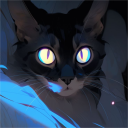
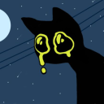
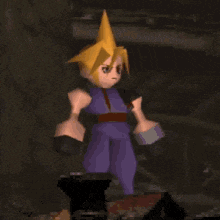

Apoiadores
Pessoal que apoia o servidor, moderadores, server boosters e algumas outras coisas.
Obrigado por manter Murof ativo!

Bezumiya.net
• Possui alto desempenho em auto sabotagem
• Procurado pela CISA por 1920 crimes
Lasanha
ⓘ User is suspected to be part of an online terrorist organization. Please report any suspicious activity to Discord staff.

Savero, K7 Studio
• Nao confiavel com armamento belico depois do incidente de 99
• Tendencias a roubar um jato da FAB

Kidd, o Narrador
• Dono de um canal no youtube muito foda
• Provavelmente ouvindo música de hippie